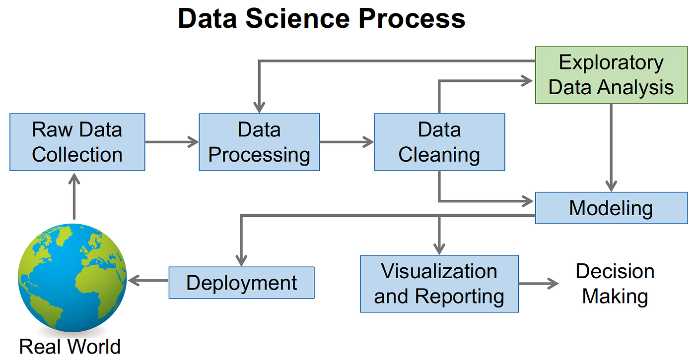
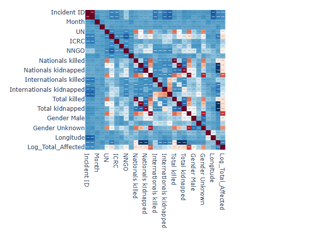
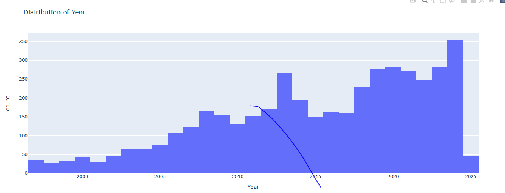
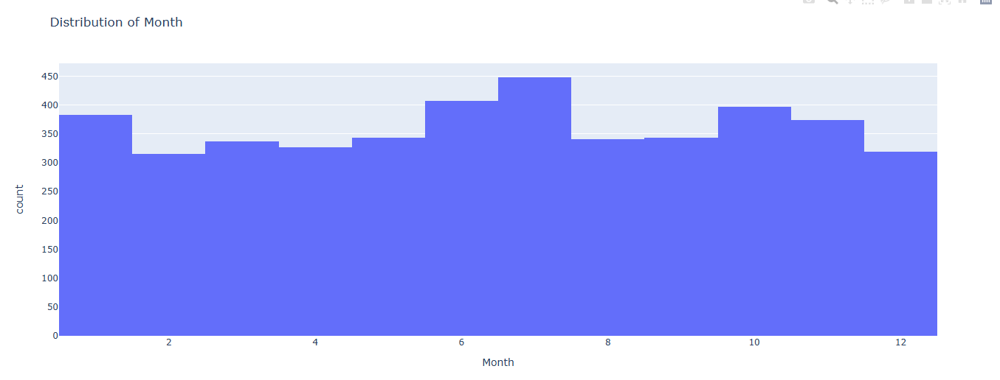
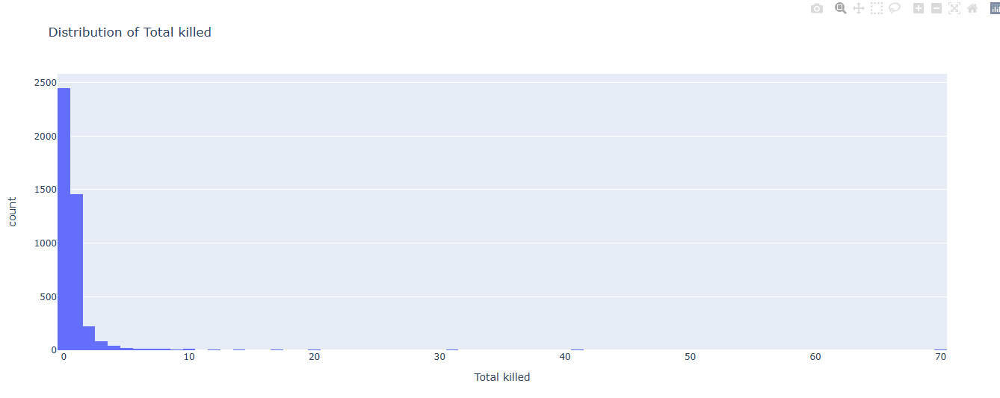
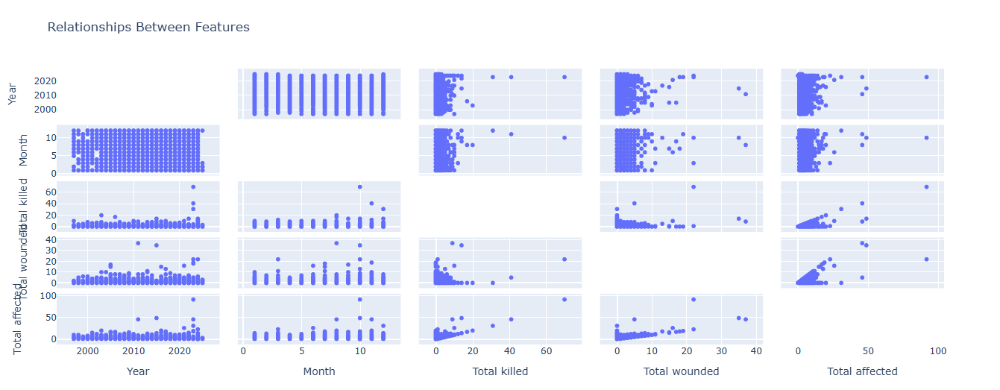
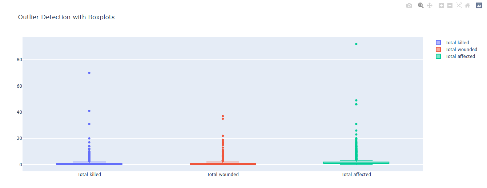
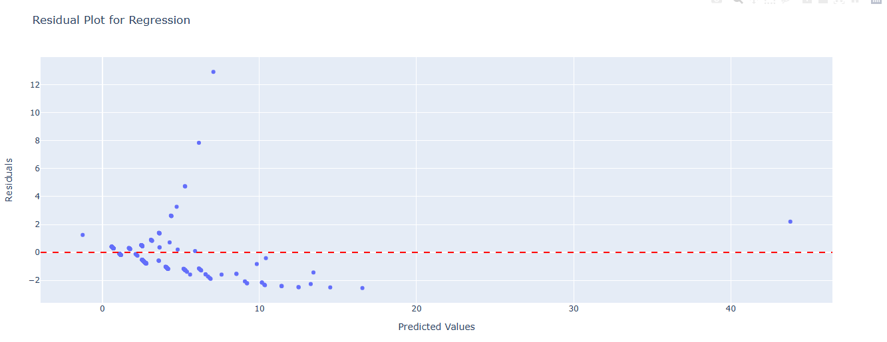
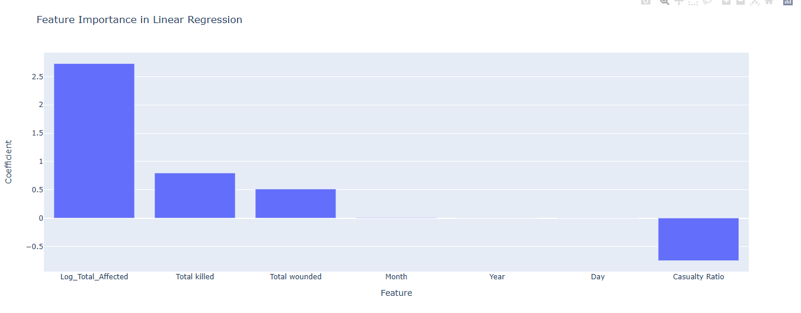

This presentation explores a dataset containing security incidents over time. The goal is to uncover patterns, relationships, and predictive insights using statistical and machine learning techniques. Key questions include understanding trends, identifying high-impact incidents, and building models to predict outcomes.
Figure 1: Overview of security incident analysis goals
What are the temporal trends in security incidents? How do casualty metrics like Total killed, Total wounded, and Total affected relate to each other? Can we predict the severity of incidents using numerical features? Can we classify incidents as verified or unverified based on available data?
Figure 2: Summary of key research questions
The dataset contains information on security incidents from 2000 to 2023. Data cleaning steps included removing duplicates, handling missing values, and creating derived features like Casualty Ratio and Log_Total_Affected. Key features include Year, Month, Total killed, Total wounded, Total affected, and Verified.
Figure 3: Dataset schema and key features
The histogram of incidents over the years shows an increasing trend from 2000 to 2015, a dip around 2016–2017, and a recent surge post-2018. These trends suggest growing instability, with potential temporary interventions during the dip.
Figure 4: Number of incidents per year
No strong seasonal patterns are observed, but the mid-year spike could be linked to specific events or conditions. The distribution of incidents across months reveals a slight peak in June and July.
Figure 5: Monthly distribution of incidents
Distributions of Total killed, Total wounded, and Total affected are highly skewed, with most incidents being minor. A small number of incidents result in disproportionately high casualties, indicating their severity.
Figure 6: Distribution of casualty metrics
The scatter matrix highlights relationships between features. Weak correlations exist between Year/Month and casualty metrics, while moderate correlations are observed between Total killed, Total wounded, and Total affected. These findings inform feature selection for predictive modeling.
Figure 7: Feature correlation scatter matrix
Boxplots reveal outliers in casualty metrics, representing high-impact incidents. These outliers skew the distributions and warrant further investigation to understand their context.
Figure 8: Outliers in casualty-related features
A linear regression model predicts Total affected using numerical features. The residual plot shows no systematic pattern, indicating a good fit. Feature importance analysis reveals that Log_Total_Affected is the strongest predictor, followed by Total killed and Total wounded.
Figure 9: Linear regression model diagnostics
A logistic regression model classifies incidents as verified or unverified. Performance metrics include accuracy, ROC AUC score, and confusion matrix. Scaling numerical features improved model performance.
Temporal trends show increasing incidents over time, with a notable dip around 2016–2017. Casualty metrics are positively correlated, with a few high-impact incidents driving the trends. Both regression and classification models performed reasonably well but have limitations.
The analysis has limitations, including weak interpretability of temporal features and potential underperformance of linear models due to non-linear relationships. High-impact incidents require deeper investigation, and more sophisticated models may improve predictions.
Future research should explore high-impact incidents further and test non-linear models like decision trees or gradient boosting. Additional features, such as geographic or event-specific markers, could enhance predictive power.
This analysis provides valuable insights into security incidents, highlighting trends, relationships, and predictive capabilities. While the models offer useful predictions, addressing limitations will strengthen future research.